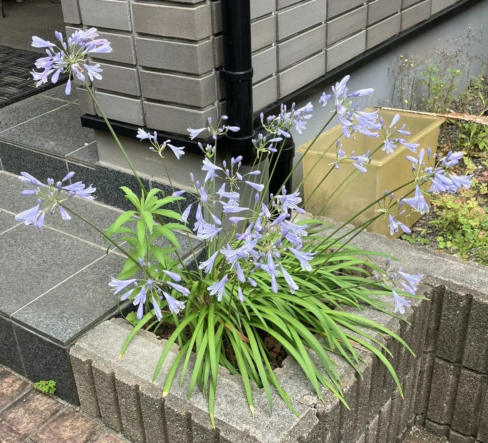

地図を読み込んでいるよ…
🔍 写真も地図も、押しているあいだ拡大して見られるよ（スマホは指を置いてすこし待ってね）。
🌍 の地図＝この子がもともと自生している場所を緑に。南アフリカ。
⭐南アフリカが原産——アガパンサスは南アフリカの草原の植物だよ。⚠日本は塗っていない——観賞用に育てられている外来の花で、日本はふるさとじゃない（でも丈夫で、庭や道ばたにたくさん植えられている）。⭐暑さ・乾燥に強くて手がかからないから、世界中の暖かい土地の庭でよく育つよ。
⚠ 地図は国（日本と中国だけ県・省）までしか塗れないから、ほんとうの分布より広く見えていることがあるよ。地図はだいたいの場所。正確なところは、上の文を見てね。
アガパンサス（紫君子蘭）
Agapanthus sp.
別名 · ムラサキクンシラン（紫君子蘭）／ 原産 · 南アフリカ／ 見どころ · ⭐「愛の花」・青紫の散形花序・丈夫で涼しげ・夏の定番
ヒガンバナ科 · Amaryllidaceae（アガパンサス属 Agapanthus）── 124 アリウム・132 スノードロップ・131 スノーフレークと同じヒガンバナ科・キジカクシ目
名前と学名の由来 ── 「愛の花」
- ⭐属名 Agapanthus（アガパンサス）＝ギリシャ語 agape（愛）＋anthos（花）で「愛の花」。だから花言葉も「恋の訪れ／ラブレター」なんだ。
- ⭐和名ムラサキクンシラン（紫君子蘭）＝「クンシラン（君子蘭）に似た、紫の花」から。⚠でも、おまけのクンシラン（Clivia）とは別属——名前は兄弟みたいなのに、親戚としては少し遠い（同じヒガンバナ科だけど属がちがう）。
- 南アフリカ原産。124 アリウム・132 スノードロップ・131 スノーフレークと同じヒガンバナ科だよ。
この植物のこと
- ヒガンバナ科の多年草（常緑〜半常緑）。⭐線形の葉が根もとから茂って、株になる。
- ⭐夏、長い花茎の先に「散形花序」——20〜100もの漏斗形（ラッパ形）の花が、放射状に集まって球のように咲く。色は青紫〜白。
- ⭐とても丈夫。暑さ・乾燥に強く、手がかからないので、庭・道路ぎわ・公園によく植えられる。青紫の涼しげな色が、夏の日ざしの中で気持ちいい。
- 124 アリウム（ネギ属・同じ散形花序）と似ているけれど、アリウムは花が小さな星形でネギのにおい、アガパンサスは花が大きな漏斗形でにおわない。
同定について
- 長い花茎の先の散形花序＋青紫の漏斗形の花＋線形の根生葉——これで、アガパンサス（Agapanthus）で確定。
- 似た子：124 アリウム（花が小さく星形）／ハナニラ／ヒガンバナ。アガパンサスは大きな漏斗形の花が放射状なのが目印だよ。
⭐ 葉や茎が「花びらみたいになる」のは？ ── 燻太さんの質問
燻太さんの「たまに、葉や茎の一部が花びらみたいになるのは何が原因？」——これ、花の設計図の話につながる、すごくいい質問。名前をつけると「栄養器官の花弁化（ホメオティック転換）」だよ。原因は主に3つ：
- ⭐① 花の“設計図の遺伝子”が、場所ちがいで働く：花びら・雄しべ・めしべの位置を決める ABCモデル（MADS-box 遺伝子） が、本来じゃない場所（葉や茎）でオンになると、そこが花弁化する。体細胞変異やキメラで安定すると「八重咲き」などの品種になることも。
- ⭐② ファイトプラズマ（虫が運ぶ植物病原体）の感染：この菌は MADS-box タンパク質を壊すエフェクター（SAP54／フィロジェンなど）を出して、花↔葉の器官を入れかえてしまう。多くは「花が葉に戻る（葉化・phyllody）」だけど、緑化や花弁化も起きる。ヨコバイなどが媒介する。
- ③ 環境ストレス・発生のゆらぎ（温度・栄養・傷）で、一過的に。
見分けの目安：「一株の一部だけ・その年だけ」＝環境やキメラの疑い／「株全体・年々ひどく・まわりにも広がる」＝ファイトプラズマを疑う／「毎年、遺伝的に安定」＝変異（品種化）。
⭐そして——このABCモデルは、燻太さんのモデル植物 100 シロイヌナズナ で解明された、花づくりの核心。畑の話と、玄関先の花が、ここでつながるね。⚠ただし、この一枚だけでは原因は特定できない。今度そういう子がいたら、花弁化した部分を写真に撮っておいてね。一緒に考えよう。
参考：Wikipedia「アガパンサス」（ヒガンバナ科アガパンサス属・南アフリカ原産／属名は agape(愛)+anthos(花)／和名ムラサキクンシラン）。花器官の転換＝ABCモデル／ファイトプラズマ葉化は一般的な発生・植物病理の知見をもとに整理。